暮らしと、ちょっといいもの。
実際のレビューをもとに、暮らしを少し良くするアイテムと知恵をお届けします。
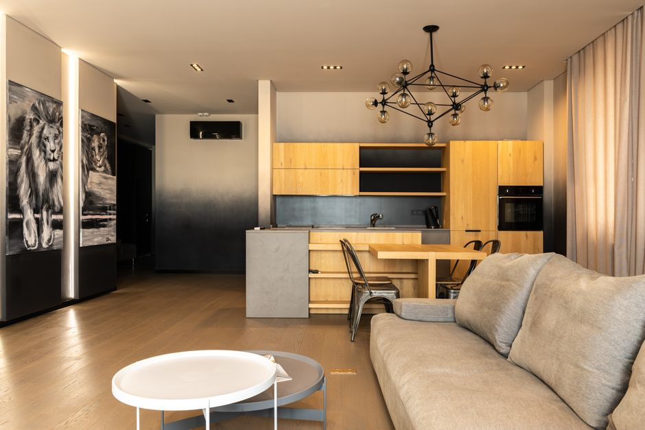
衣類乾燥除湿機とドラム式洗濯乾燥機、用途で選ぶ使い分け方
衣類乾燥除湿機とドラム式洗濯乾燥機は仕組みも得意なことも異なります。設置のしやすさ・電気代・乾燥方式の違いを整理し、どちらが自分の暮らしに合うか考えるヒントを紹介します。
2026-10-28
-
メンズファッション
型崩れ・シワを防ぐメンズ服の素材選びと収納のコツ
シワになりにくい服の素材の特徴と、クローゼットや旅行時の収納方法について、素材の性質や収納の工夫をもとに分かりやすく解説します。
2026-10-28
-
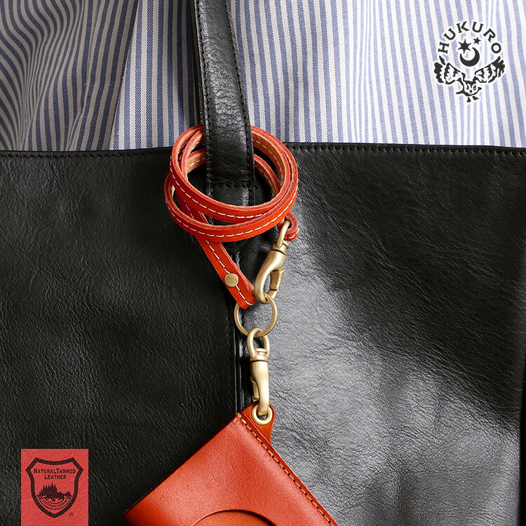
ガジェット ・ PRスマホストラップおすすめ3選 本革・手首・ビーズで比較
本革タイプ、手首にかけるハンドストラップ、ビーズデザインの3種類のスマホストラップを、価格やレビュー評価をもとに比較してご紹介します。
2026-10-27
-
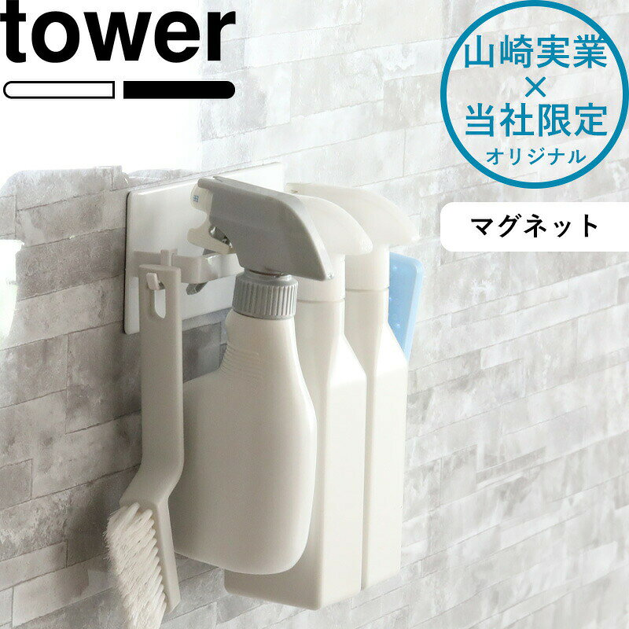
生活雑貨 ・ PR生活雑貨のおすすめアイテム比較 浴室収納・旅行ポーチ・掃除
浴室のスプレーボトル収納、旅行時の圧縮ポーチ、トイレ掃除グッズをレビュー評価とともに比較。日常のちょっとした困りごとを解決する生活雑貨3点を紹介します。
2026-10-27
-
キッチン
電子レンジとオーブンの掃除方法｜焦げとニオイの対策まとめ
電子レンジとオーブンの庫内の汚れやニオイを、重曹やクエン酸、レモンの皮などを使って落とす方法を紹介します。日常的なお手入れのコツも解説します。
2026-10-26
-
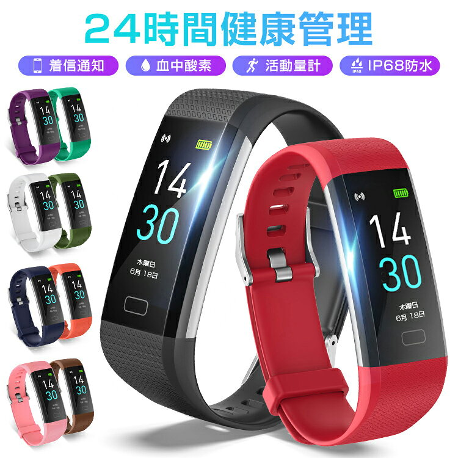
Huawei・中華ガジェット ・ PR中華ガジェットのスマートウォッチとベルトおすすめ比較
Huawei・中華ガジェットジャンルで注目のスマートウォッチ2点と本革時計ベルト1点を、仕様やレビュー評価をもとに比較してご紹介する記事です。健康管理機能やベルトの素材・サイズ調整のしやすさなど、選ぶ際のポイントを解説します。
2026-10-26
-
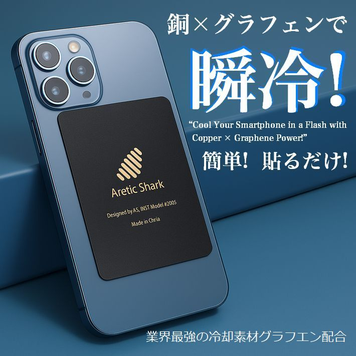
Apple最新情報 ・ PRApple周辺で揃えたい冷却・ケース・充電器比較3選
iPhoneユーザー向けに、スマホ冷却グッズ・MagSafe対応ケース・au純正充電器の3点をレビュー評価とともに比較紹介します。
2026-10-25
-
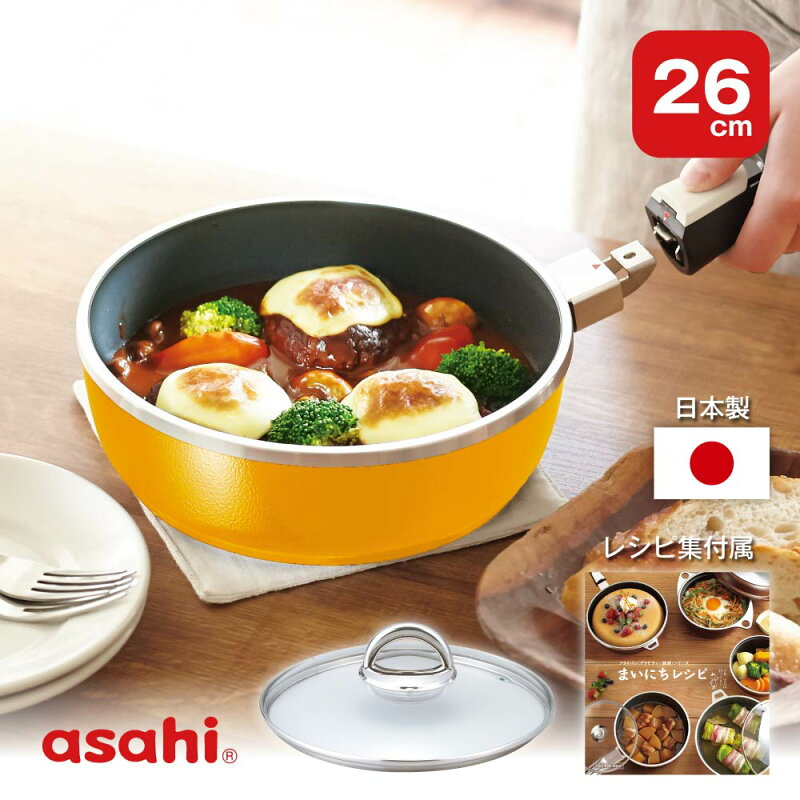
便利家電・最新家電 ・ PRフライパンと小型衣類乾燥機で選ぶ便利家電比較
IH・ガス火対応のフライパンと工事不要の小型衣類乾燥機を、価格とレビュー評価をもとに比較しながらご紹介します。サイズ選びの参考にもなる内容です。
2026-10-25
-
メンズファッション
清潔感コーデの鉄則|色・サイズ感・髪型で差がつく基本
清潔感のあるメンズコーデを作るための色選び・サイズ感・シワ対策・髪型のポイントを、具体的な根拠とともに紹介します。
2026-10-24
-
ガジェット
スマホストレージ不足を解消する整理方法【2026年版】
スマホの「ストレージが不足しています」を解消する整理術を紹介します。内訳の確認から写真・キャッシュの整理、クラウド活用、Android最新機能まで順番に解説します。
2026-10-24
-
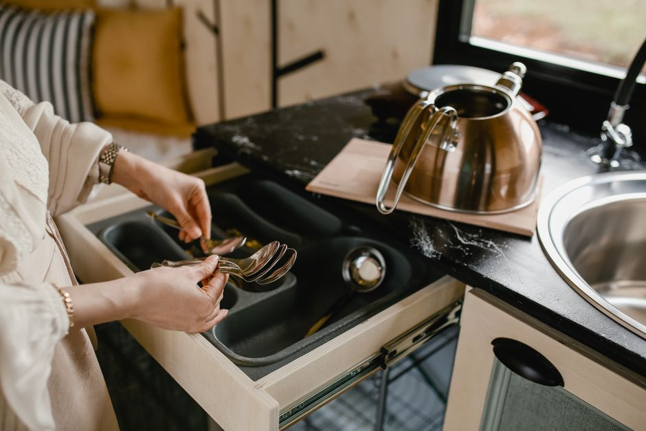
生活雑貨来客前の片付けはどこから?短時間でできる優先順位とコツ
急な来客で時間がないときの片付けの優先順位と具体的なコツを紹介。玄関・リビング・トイレを中心に、短時間でも印象よく整える方法を解説します。
2026-10-23
-
キッチン
作り置き・冷凍保存を上手に活用するコツと保存期間の目安
作り置きや冷凍保存を美味しく安全に活用するための調理のポイント、保存期間の目安、解凍方法をわかりやすく紹介します。小分け保存や空気抜きなど、今日から試せるコツをまとめました。
2026-10-23
-
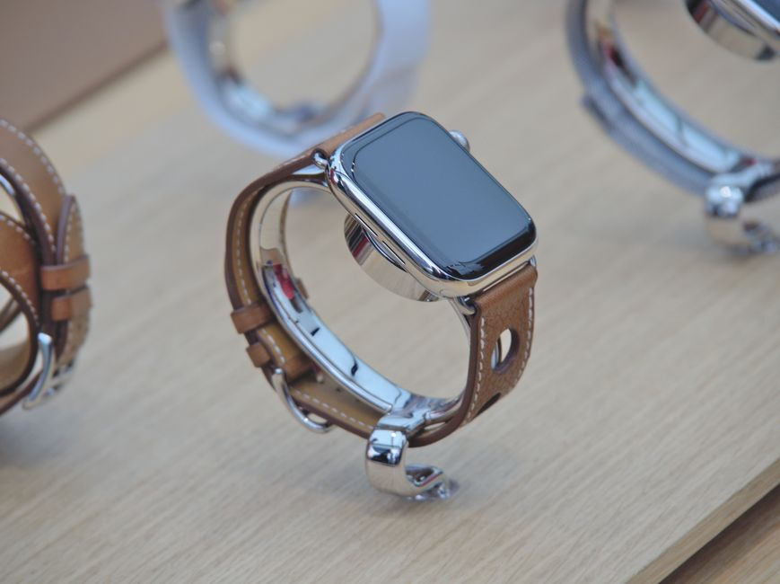
Huawei・中華ガジェット中華ガジェットの保証・サポート窓口とトラブル対処法
HuaweiやXiaomi、Ankerなど中華ガジェットを購入する際に知っておきたい保証の仕組み、サポート窓口の探し方、故障・返品トラブルが起きた時の具体的な対処法を解説します。
2026-10-22
-
Apple最新情報
MacとiPhoneの連携機能で作業を速くする方法まとめ
ユニバーサルクリップボードやHandoff、iPhoneミラーリングなど、MacとiPhoneを組み合わせて作業効率を上げる連携機能と設定条件を紹介します。
2026-10-22
-
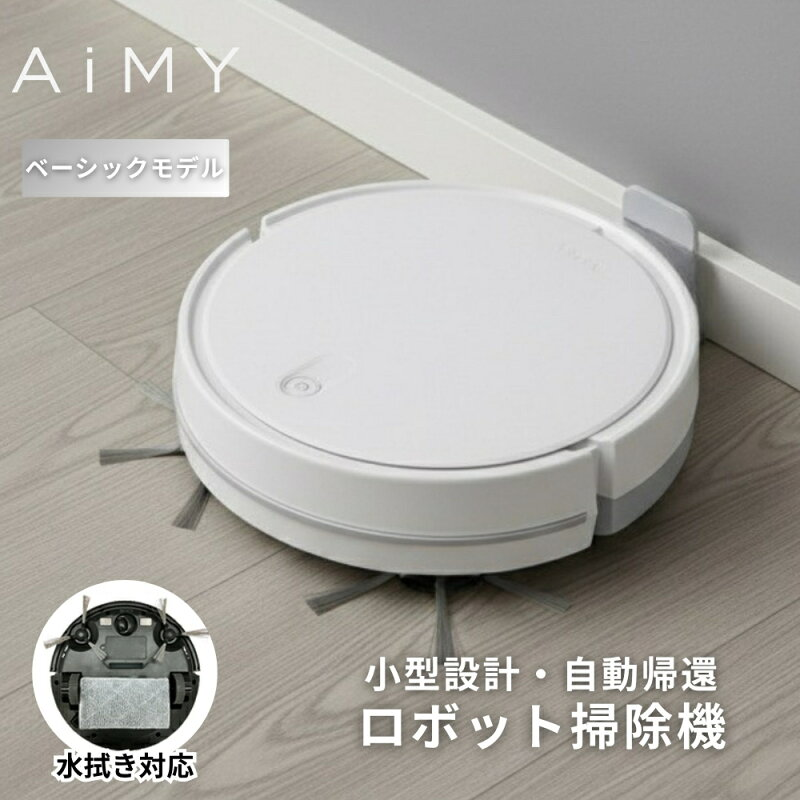
便利家電・最新家電 ・ PR掃除・調理の時短に役立つ便利家電3選比較ガイド
ロボット掃除機、ノンフライヤー、フライパンという毎日の家事を助ける便利家電3点を、価格・レビュー評価・特徴から比較して紹介します。
2026-10-21
-
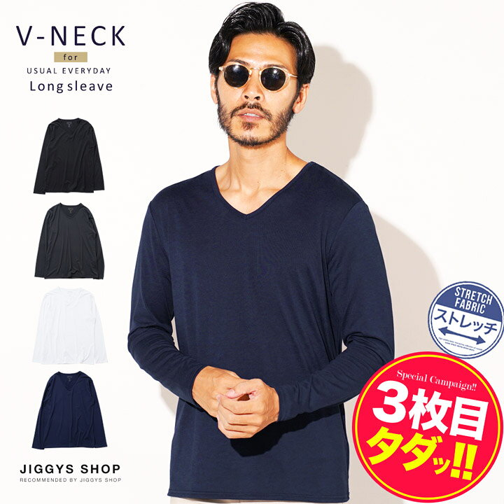
メンズファッション ・ PRメンズファッション比較|Tシャツ&カーディガン3選
長袖Tシャツ・7分袖Tシャツ・ニットカーディガンの3点を、レビュー評価や素材・デザインの特徴から比較し、季節の変わり目に使いやすいアイテムを紹介します。
2026-10-21
-
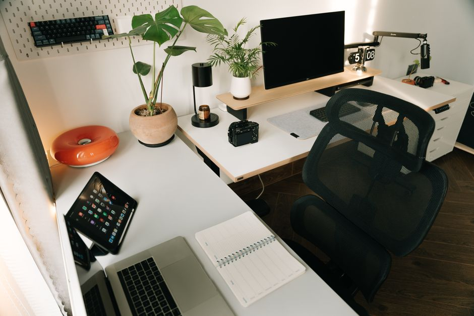
ガジェットPC周辺機器のケーブル配線をすっきりまとめるコツ
デスク周りのケーブルがごちゃつく原因と、電源タップの位置決めや結束バンド・面ファスナーの使い分けなど、配線整理の基本的な考え方を紹介します。
2026-10-20
-
 生活雑貨 ・ PR
生活雑貨 ・ PR
生活雑貨のおすすめアイテム比較 キッチン・米びつ・車用品
キッチンバサミ・お米保存袋・車用ゴミ箱など、毎日の暮らしを少し快適にする生活雑貨3点をレビュー評価とともに比較紹介します。
2026-10-20
-
 キッチン ・ PR
キッチン ・ PR
水切りラックおすすめ比較｜ステンレス・折りたたみ型3選
キッチンの水切りに使える3タイプのアイテムを比較。大容量のステンレス水切りラック、省スペースなシンク周り収納、収納しやすい折りたたみ型まで、特徴をわかりやすく紹介します。
2026-10-19
-
 Huawei・中華ガジェット
Huawei・中華ガジェット
格安ワイヤレスイヤホンの品質を見分ける5つのチェックポイント
価格だけでは判断しにくい格安ワイヤレスイヤホンの品質について、Bluetoothバージョンや防水性能、技適マークなど購入前に確認したいポイントを整理して紹介します。
2026-10-19
-
 Apple最新情報
Apple最新情報
Apple Watchの健康機能まとめ｜血圧通知と睡眠スコアの使い方
最新のApple Watchとwatchos26で使える健康機能を紹介します。高血圧の可能性お知らせ機能や睡眠時無呼吸の通知、睡眠スコア、心臓関連の機能、Workout Buddyの使い方を、断定を避けつつわかりやすく解説します。
2026-10-18
-
 便利家電・最新家電
便利家電・最新家電
工事不要の食洗機を選ぶ前に確認したい5つのポイント
工事不要タイプの食洗機は給水方式や設置スペース、賃貸の場合の確認事項など事前に調べておきたい点が複数あります。購入前にチェックしたいポイントを整理しました。
2026-10-18
-
 メンズファッション
メンズファッション
自宅でできる衣類のシミ・ニオイ対策|黄ばみと臭いの落とし方
襟や袖口の黄ばみ・汗染み、気になる皮脂臭やタバコ臭を自宅で和らげる方法を紹介。中性洗剤やセスキ炭酸ソーダ、重曹・クエン酸の使い分けなど、原因に合わせたケアのコツをまとめました。
2026-10-17
-
 ガジェット
ガジェット
外出先で役立つ充電・通信トラブルの備え方【2026年版】
2026年のモバイルバッテリー機内持ち込みルール変更や海外eSIMの接続トラブル対処法、国内の通信障害時の備えなど、外出先で役立つ充電・通信対策を事実に基づいて紹介します。
2026-10-17
-
 生活雑貨
生活雑貨
掃除機とフローリングワイパーの正しい順番と効率的な使い方
フローリング掃除は掃除機とワイパー、どちらを先に使うべきか迷う方へ。ワイパーと掃除機の正しい順番、ドライ・ウェットシートの使い分け、掃除機を効率よくかけるコツを根拠とともに紹介します。
2026-10-15
-
 キッチン
キッチン
食器用スポンジと布巾を清潔に保つ正しい除菌・交換の習慣
キッチンスポンジや布巾は菌が増えやすいアイテムです。日々のもみ洗いや水切り保管、除菌方法、交換の目安など、清潔を保つための具体的な習慣を紹介します。
2026-10-15
-
 Huawei・中華ガジェット
Huawei・中華ガジェット
XiaomiとAnkerで比較するコスパ重視ガジェットブランドの選び方
モバイルバッテリーやイヤホンで人気のXiaomiとAnkerを例に、価格・保証・技術面での違いを整理し、コスパ重視でガジェットを選ぶ際の考え方を紹介します。
2026-10-14
-
 Apple最新情報 ・ PR
Apple最新情報 ・ PR
Apple周辺で揃えたい充電器とアクセサリー比較3選
Appleユーザーに向けて、2ポート急速充電器、バッグなどに付けられるチャーム、MagSafe対応リングの3点を実際の商品データをもとに比較紹介します。
2026-10-14
-
 便利家電・最新家電 ・ PR
便利家電・最新家電 ・ PR
便利家電・最新家電のおすすめアイテム比較2026
最新のロボット掃除機2機種と一人暮らし向け炊飯器を、口コミ評価や製品説明をもとに比較しながら紹介する便利家電ガイドです。
2026-10-13
-
 メンズファッション ・ PR
メンズファッション ・ PR
チノパン&Tシャツ比較|シルエットと柄で選ぶメンズコーデ
スキニー・ブーツカットのチノパンと柄豊富な半袖Tシャツを比較。サイズ感やレビューの声を参考に、自分の体型やコーデに合うアイテムを選ぶヒントを紹介します。
2026-10-13